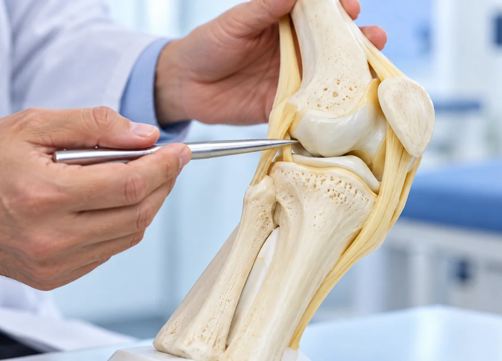
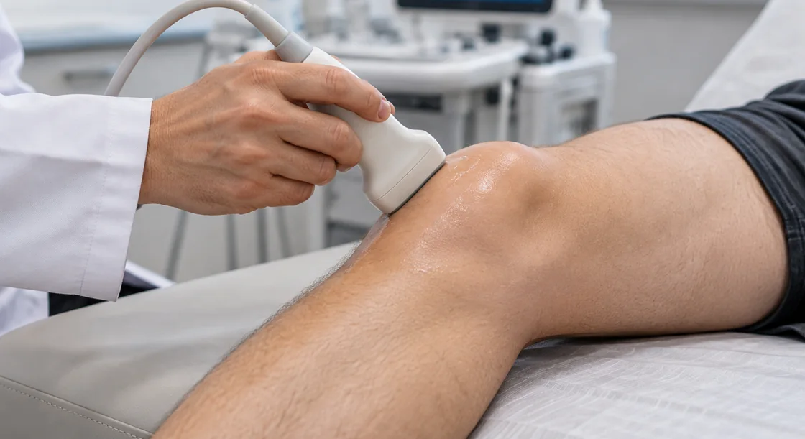

곧은 무릎클리닉은 김도윤 원장과 각 진료 분야가 함께 증상, 검사 결과 및 환자의 생활을 살펴 치료 방향을 상의합니다.
통증을 평가하는 단계부터 치료 뒤 걷는 연습까지 하나의 과정으로 살핍니다. 필요한 검사와 수술, 재활의 시점을 환자 상태에 맞춰 연결합니다.
무릎의 변화가 일상에서 어떤 차이를 만드는지 함께 확인하겠습니다.

곧은정형외과는 진료 중 확인한 상태와 검사 결과를
바탕으로
지금 이 시점에 수술이 필요한지,
수술 이외의 방법도 적합한지 함께 검토합니다.
질환의 진행 정도와 생활 속 불편,
평소 활동과 회복 목표를
종합하여 환자에게 알맞은
치료 방향을 제시합니다.

곧은정형외과는 안전하고 정확한 수술을
위해 준비 과정을 점검합니다.
수술의 방법과 필요한 장비를 충분히 검토하고
환자의 상태와 치료 목표를 고려한 방식으로
수술을 시행합니다.
수술이 회복의 시작이라면, 재활은
그 과정을 완성하는 단계입니다.
입원 중 재활을 이어 갈 수 있는 병동을 운영해
과학적 근거에 기반한
맞춤형 재활 프로그램으로
퇴원 뒤 생활을 준비하는 과정을 함께 돕습니다.
수술 뒤의 생활도 무릎 치료의 한 부분입니다.
곧은정형외과는 치료가 끝난 뒤의 움직임을 생각합니다.
나이 듦에 따른 건강 변화도 함께 살피는 과정에서
영양, 면역, 정신 건강 등
전반적인 건강 요소를
점검하고, 환자가 자신의 생활을 차분하게
이어 갈 수 있도록 회복 뒤에도 필요한
케어를 이어갑니다.
Godeun Clinic, Care for Everyday Life